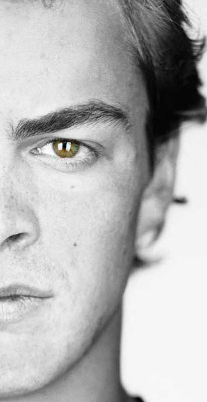
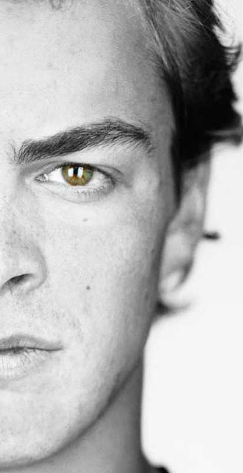
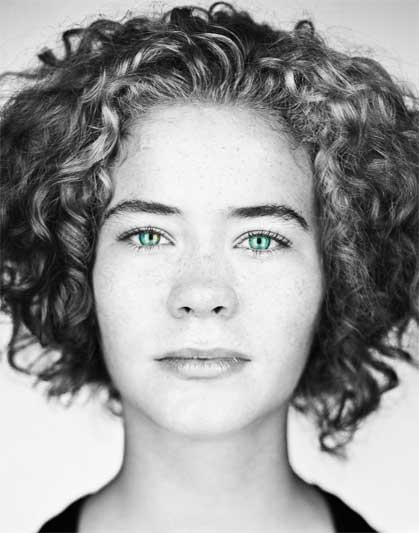
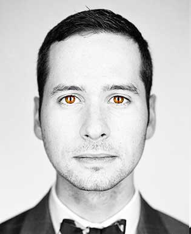

They have the same piercing eyes. The same color hair. One may be shy, while the other loves meeting new people. Discovering why identical twins differ—despite having the same DNA—could reveal a great deal about all of us.
 

When Christopher Griffin (right) got the number two tattooed on his wrist as a symbol of being a twin, he thought his brother Cole (left) would get a matching tattoo. Cole did, sort of. “I was born first, so I got a ‘one,’ ” he says, laughing. At 20, the twins say they now share more and get along better than they did growing up. They go to different Ohio colleges but have a daily reminder of each other: Each has the other’s name tattooed on his inner lip.
Every summer, on the first weekend in August, thousands of twins converge on Twinsburg, Ohio, a small town southeast of Cleveland named by identical twin brothers nearly two centuries ago.
They come, two by two, for the Twins Days Festival, a three-day marathon of picnics, talent shows, and look-alike contests that has grown into one of the world’s largest gatherings of twins.
Dave and Don Wolf of Fenton, Michigan, have been coming to the festival for years. Like most twins who attend, they enjoy spending time with each other. In fact, during the past 18 years, the 53-year-old truckers, whose identical beards reach down to their chests, have driven more than three million miles together, hauling everything from diapers to canned soup from places like Seattle, Washington, to Camden, New Jersey. While one sits at the wheel of their diesel Freightliner, the other snoozes in the bunk behind him. They listen to the same country gospel stations on satellite radio, share the same Tea Party gripes about big government, and munch on the same road diet of pepperoni, apples, and mild cheddar cheese. On their days off they go hunting or fishing together. It’s a way of life that suits them.
“Must be a twins thing,” Don says.
This afternoon at the festival the brothers have stopped by a research tent sponsored by the FBI, the University of Notre Dame, and West Virginia University. Inside the big white tent technicians are photographing sets of twins with high-resolution cameras, collecting their fingerprints, and scanning their irises to find out if the latest face-recognition software can tell them apart.
“Although identical twins may look the same to you and me, a digital imaging system can spot minute differences in freckles, skin pores, or the curve of their eyebrows,” says Patrick Flynn, a computer scientist from Notre Dame. But so far, he says, even the most advanced commercial systems can be tripped up by changes in lighting, facial expressions, and other complications, whether imaging twins or others.
Because their beards cover half of their faces, the Wolf brothers pose a particular challenge. This seems to amuse them. “After they took my picture,” Dave says, “I asked one guy if I went out and committed a crime and then went home and shaved, would they be able to tell it was me? He kind of looked at me and said, ‘Probably not. But don’t go out and commit a crime.’“
Nature and Nurture
Five-year-olds Carly (left) and Lily (right) Ayer of Ohio are so inseparable that their mother, Lisa, occasionally worries: “I wonder if they sometimes think they are the same person.” The girls are in the same class at school and in swimming. When teachers tried to move Carly up to a more advanced swimming class, Lily protested: She didn’t want to be left behind.
Flynn and his colleagues aren’t the only scientists at work here. With the blessing of the event’s organizers, a number of others have set up booths in a small parking lot on the edge of the festival grounds. In the tent next to the FBI project, researchers from the Monell Chemical Senses Center in Philadelphia are asking twins to sip tiny cups of alcohol to see if they react the same way to the taste. Next to them, doctors from University Hospitals in Cleveland are quizzing twin sisters about women’s health issues. Across the courtyard a dermatologist from Procter & Gamble is interviewing twins about skin damage.
To these scientists, and to biomedical researchers all over the world, twins offer a precious opportunity to untangle the influence of genes and the environment—of nature and nurture. Because identical twins come from a single fertilized egg that splits in two, they share virtually the same genetic code. Any differences between them—one twin having younger looking skin, for example—must be due to environmental factors such as less time spent in the sun.
Alternatively, by comparing the experiences of identical twins with those of fraternal twins, who come from separate eggs and share on average half their DNA, researchers can quantify the extent to which our genes affect our lives. If identical twins are more similar to each other with respect to an ailment than fraternal twins are, then vulnerability to the disease must be rooted at least in part in heredity.
These two lines of research—studying the differences between identical twins to pinpoint the influence of environment, and comparing identical twins with fraternal ones to measure the role of inheritance—have been crucial to understanding the interplay of nature and nurture in determining our personalities, behavior, and vulnerability to disease.
Lately, however, twin studies have helped lead scientists to a radical, almost heretical new conclusion: that nature and nurture are not the only elemental forces at work. According to a recent field called epigenetics, there is a third factor also in play, one that in some cases serves as a bridge between the environment and our genes, and in others operates on its own to shape who we are.
The Jim Twins

Nine-year-old sisters Emily (left) and Kate (right) get along well and also have a psychic shopping bond. Their mom sometimes takes them to the mall on separate occasions. Even when one twin doesn’t know what the other twin has selected, they typically want to buy the same clothes.
The idea of using twins to measure the influence of heredity dates back to 1875, when the English scientist Francis Galton first suggested the approach (and coined the phrase “nature and nurture”). But twin studies took a surprising twist in the 1980s, following the discovery of numerous identical twins who’d been separated at birth.
The story began with the much publicized case of two brothers, both named Jim. Born in Piqua, Ohio, in 1939, Jim Springer and Jim Lewis were put up for adoption as babies and raised by different couples, who happened to give them the same first name. When Jim Springer reconnected with his brother at age 39 in 1979, they uncovered a string of other similarities and coincidences. Both men were six feet tall and weighed 180 pounds. Growing up, they’d both had dogs named Toy and taken family vacations in St. Pete Beach in Florida. As young men, they’d both married women named Linda, and then divorced them. Their second wives were both named Betty. They named their sons James Alan and James Allan. They’d both served as part-time sheriffs, enjoyed home carpentry projects, suffered severe headaches, smoked Salem cigarettes, and drank Miller Lite beer. Although they wore their hair differently—Jim Springer had bangs, while Jim Lewis combed his hair straight back—they had the same crooked smile, their voices were indistinguishable, and they both admitted to leaving love notes around the house for their wives.
As soon as he heard about the two Jims, Thomas Bouchard, Jr., a psychologist at the University of Minnesota, invited them to his lab in Minneapolis. There he and his team gave the brothers a series of tests that confirmed their similarities. Although each had charted his own course in life, the Jim twins, as they came to be known, seemed to have followed the same paths.
“I remember sitting at a table with them when they first arrived,” Bouchard says. “They both had fingernails that were nibbled down to the end. And I thought, No psychologist asks about that, but here it is, staring you in the face.”
Skeptics later claimed that such details were exaggerated or that coincidences were just coincidences. But Nancy Segal, a professor of psychology at California State University, Fullerton, attests to the Jim twins’ striking similarity. “I met them maybe a year after they were reunited, and they were absolutely on the level,” says Segal, who joined Bouchard’s team in 1982. “Even though their hair was different, I couldn’t remember who was who.”
By then, researchers had discovered other twins who’d been separated as infants and reunited as adults. Over two decades 137 sets of twins eventually visited Bouchard’s lab in what became known as the Minnesota Study of Twins Reared Apart. The twins were tested for mental skills, such as vocabulary, visual memory, arithmetic, and spatial rotation. They were given lung-function tests and heart exams and had their brain waves measured. They took personality tests and IQ tests and were quizzed about their sexual histories. Altogether, each twin was bombarded with more than 15,000 questions. “We threw the kitchen sink at them,” Bouchard says.
Armed with this mountain of data, Bouchard, Segal, and their colleagues set out to unravel some of the knottiest mysteries of human nature: Why are some people happy and others sad? Why are some outgoing and others shy? Where does general intelligence come from? The key to their approach was a statistical concept called heritability. In broad terms, the heritability of a trait measures the extent to which differences among members of a population can be explained by differences in their genetics. By comparing the likelihood that identical twins share a given trait with the likelihood that fraternal twins share the same trait, researchers can calculate how much of the difference is due to genetic variation. A person’s height, for example, is often estimated at 0.8, meaning that 80 percent of the differences in height among individuals in a specific population are due to differences in their genetic makeups.
When they looked at the data on twins’ intelligence, Bouchard’s team reached a controversial conclusion: For people raised in the same culture with the same opportunities, differences in IQ reflected largely differences in inheritance rather than in training or education. Using data from four different tests, they came up with a heritability score of 0.75 for intelligence, suggesting the strong influence of heredity. This ran counter to the prevailing belief of behaviorists that our brains were blank slates waiting to be inscribed by experience. More alarming to some, the suggestion that intelligence was linked to heredity evoked the disgraced theories of the eugenics movements of the early 20th century in England and the United States, which had promoted improvement of the collective gene pool through selective breeding.
“The far-left groups on campus were trying to get me fired,” Bouchard says.
The researchers also questioned how much parenting affects intelligence levels. When they compared identical twins raised in different families, like the Jim twins, with those raised in the same family, they found each pair’s IQ scores to be similar. It was as if it didn’t matter in which family the twins had been raised. That didn’t imply, Bouchard and his colleagues were quick to point out, that parents have no impact at all on their children. Without a loving and supportive environment, no child can reach his or her full potential, they said. But when it came to explaining why a particular group of children ended up with different IQ scores, 75 percent of the variation was due to genetics, not parenting.
Besides the Minnesota project, which ended in 2000, other studies have used twins research to examine all kinds of behaviors and attitudes. One investigation, for example, found that an identical twin with a criminal co-twin was more than 1.5 times as likely to break the law as a fraternal twin in the same situation, suggesting that genetic factors somehow set the stage for criminal behavior. Another study found that the strength of an individual’s religious fervor was significantly shaped by heredity, though one’s choice of affiliation—whether to become, say, a Methodist or a Roman Catholic—was not.
Wherever scientists looked, it seemed, they found the invisible hand of genetic influence helping to shape our lives.
Separated at Birth
The 15-year-old sisters want to go to the same university and become opera singers. They both like to draw as well but have a different approach to their art. Marta (right) depicts finely detailed faces, while Emma (left) prefers more expansive images: the sky, the rain, objects in motion.
For two couples in Canada, the power of DNA to affect behavior is more than an academic question. Since 2000 they’ve been raising identical twin sisters 275 miles apart in a kind of accidental science experiment.
Lynette and Mike Shaw met Allyson and Kirk MacLeod while using the same adoption agency. The Shaws live in Amherstburg, a rural community near Windsor, Ontario, and the MacLeods live in Sutton, a suburban town near Toronto. In February 2000 they traveled together to Chenzhou, a city in China’s Hunan Province, with a small group of prospective parents. When they saw the babies they were adopting, they had the first of many twin moments.
“When the girls came off the elevator, we looked at our daughter and the other child, and I went, ‘Wow, she looks just the same,’ “ Mike says.
“Their cries were the same. Their laughs were the same. You honestly couldn’t tell one baby girl from the other,” Lynette says.
Before coming to China, the couples had seen photographs of the infants, who were six months old at the time, and they’d wondered if they were sisters. When they asked representatives of the orphanage, they were told the girls weren’t related, even though they were listed as having the same birth date. In any event, the couples were told, both children would not be given to a single family for adoption. If the Shaws and MacLeods did not adopt them, the babies would be returned to the orphanage and placed with other families. Under such circumstances, the couples feared, the girls might be separated forever. So they took the babies home to Canada with them, determined to do what was best, even if that meant raising identical twin sisters apart.
“The Shaws are part of our extended family now,” Kirk says. “We try to get together as much as we can.”
The MacLeods make the four-hour drive to Amherstburg—or the Shaws travel to Sutton—every six to eight weeks. As soon as the MacLeods’ car stops in the Shaws’ driveway, Lily pops out of the backseat and rushes into the waiting arms of her sister, Gillian. Now 12, they both have open faces and shoulder-length black hair, though Gillian recently got pink braces. “They’re sisters through and through,” Lynette says, looking on. “Like peas in a pod.”
The Shaws and MacLeods know how rare their situation is. There are only a handful of other cases, also involving adoptions from Asia, where separated twins are being knowingly raised apart. Their daughters seem to be taking it all in stride.
“I don’t hate it. I don’t love it,” Lily says of being a twin. “But if we lived closer, we could invite each other over for sleepovers.”
“Yeah, that would be fun,” Gillian agrees.
Because they’ve kept in close touch, the parents have shared every milestone they’ve tracked in the twins’ development. At 14 months old, for example, both girls took their first steps on the same day—one in Amherstburg, the other in Sutton. They both had small holes in their teeth and amblyopia, or lazy eye, in one eye. Even as toddlers, they both showed the same aggressive streak.
“When she was only two, Gillian would go after older kids on the hockey rink,” Mike says. “Sometimes she’d make them cry.”
As they grew older, Lily seemed to be the artistic one, Gillian the athlete, spurred on perhaps by the Shaw’s other children, Heather and Eric, who were both into sports. “But then Lily went out for track and won her hundred meter,” Kirk says. “And I came back to that nature versus nurture thing.”
The push and pull between genetics and family life is never far from their minds, the couples say. “We like to think we’re making an impact as parents,” Allyson offers. But then in the middle of a conversation Lily will roll her eyes exactly the way Gillian does, and Allyson is suddenly reminded of her daughter’s twin. “It’s like, whoo!” she says. “Sometimes it will stand the hairs up on the back of my neck.”
Katie and Sarah Parks are “mirror twins,” a rare type of identical twins that share select traits or attributes on opposite sides of their bodies. Katie and Sarah’s “mirroring” can be seen in their faces; other mirror twins are respectively right and left handed, or manifest illness on opposite sides.
The Third Component
That Lily and Gillian seem so similar, despite being raised in different families, underscores the genetic heritage that identical twins share. But for two brothers in Maryland, the situation is just the reverse. Despite being raised in the same family, these identical twins couldn’t seem more different. What could be so powerful that it trumps the combined effects of nature and nurture?
“I saw a cumulus congestus cloud at recess today,” Sam says, making conversation as he waits for his brother, John, to get home from school. “It was very big. Then it broke up into a nimbostratus.”
A bright-eyed six-year-old with glasses, Sam sounds like a professor in a meteorology class. Clouds are his latest passion, his mother says. Before that it was trains, space, and maps. Lately, he’s been working his way through a child’s encyclopedia, gathering facts like a squirrel hoarding nuts, as she puts it.
The twins are both in first grade, but they attend different elementary schools, so that John can get the attention he needs. (The boys’ parents requested that we not publish their last name.) When John’s bus drops him off at home, he races inside, and Sam ambushes him with an affectionate hug. John laughs but doesn’t speak. When Sam releases him, John walks to a box with stuffed animals and starts flapping his hands in excitement. He’s back in his own world.
Both boys were diagnosed with autism spectrum disorder shortly before their second birthday, though John’s symptoms are far more severe, including constant movement, trouble speaking, and difficulty making eye contact. Sam has challenges too, mainly with social skills. The fact that they share a developmental disorder is not unusual. When one identical twin is diagnosed with autism, studies have shown, there’s about a 70 percent chance the other will be too.
No one knows what causes the disorder, which is diagnosed in about one of every hundred children. Inheritance is thought to play a significant role, though experts believe autism may be triggered by as yet unidentified environmental factors. A study of twins in California last year suggested that experiences in the womb and first year of life can have a major impact.
John’s parents wonder if that was the case with him. Born with a congenital heart defect, he underwent surgery at three and a half months, then was given powerful drugs to battle an infection. “For the first six months, John’s environment was radically different than Sam’s,” his father says.
Shortly after Sam and John were diagnosed, their parents enrolled them in a study at the Kennedy Krieger Institute in Baltimore. Blood samples from the boys were shared with a team at nearby Johns Hopkins University looking into the connection between autism and epigenetic processes—chemical reactions tied to neither nature nor nurture but representing what researchers have called a “third component.” These reactions influence how our genetic code is expressed: how each gene is strengthened or weakened, even turned on or off, to build our bones, brains, and all the other parts of our bodies.
If you think of our DNA as an immense piano keyboard and our genes as keys—each key symbolizing a segment of DNA responsible for a particular note, or trait, and all the keys combining to make us who we are—then epigenetic processes determine when and how each key can be struck, changing the tune being played.
One way the study of epigenetics is revolutionizing our understanding of biology is by revealing a mechanism by which the environment directly impacts genes. Studies of animals, for example, have shown that when a rat experiences stress during pregnancy, it can cause epigenetic changes in a fetus that lead to behavioral problems as the rodent grows up. Other epigenetic changes appear to occur randomly—throwing a monkey wrench into the engine of nature versus nurture. Still other epigenetic processes are normal, such as those that guide embryonic cells as they become heart, brain, or liver cells, for example.
“During pregnancy, many changes must occur as cells commit to and become progressively specialized tissues, and we know that process involves a cascade of epigenetic programs,” says Andrew Feinberg, director of the Center for Epigenetics at Johns Hopkins School of Medicine.
Feinberg’s study focuses on a particular epigenetic process called DNA methylation, which is known to make the expression of genes weaker or stronger. To better understand how it relates to autism, Feinberg and his team are using scanners and computers to search samples of DNA from autistic twins for epigenetic “tags,” places along the genome where methylation changes the pattern of gene expression.
The goal of the study, still in progress, is to determine whether individuals with severe autism like John have different methylation profiles than other people. If they do, that might explain how he could turn out so different from Sam. Despite sharing the same keyboard, their bodies are playing different tunes.
It’s a promising new approach, says Arturas Petronis, who heads the epigenetics lab at Toronto’s Centre for Addiction and Mental Health. Researchers have known for some time that complex disorders such as autism are highly heritable. But intensive scrutiny of DNA sequences themselves hasn’t revealed why twins like Sam and John diverge so much in their behavior. “After 30 years of molecular genetic studies we can explain only about 2 or 3 percent of inherited predisposition to psychiatric disease,” he says. The rest is still a mystery. That’s one reason the National Institutes of Health created the Roadmap Epigenomics Program in 2008, providing $185 million for research into epigenetics at more than 40 labs.
As Feinberg and Petronis readily admit, such research is still at an early stage. Scientists are only beginning to understand how epigenetic processes relate to complex disorders like autism. The good news is that some of these processes, unlike our DNA sequences, can be altered. Genes muted by methylation, for example, sometimes can be switched back on again relatively easily. And though it may not happen soon, the hope is that someday epigenetic mistakes will be as simple to repair as a piano that’s out of tune.
Writing in Pen and Pencil
The Mueller twins went to the same college (RISD), share the same job (software design) at the same company, and even pick out their outfits together every morning in their Brooklyn apartment. Also, both are gay. The pair has been profiled in the New York Times, New York Magazine, and the New York Observer.
Back at the Twins Days Festival, Danielle Reed is standing in front of the Monell Center’s research booth with a clipboard, asking twins to participate in her alcohol study. She’s doing a brisk business, signing up one pair after another. A geneticist by training, Reed has worked with many twins over the years and thought deeply about what twin studies have taught us.
“It’s very clear when you look at twins that much of what they share is hardwired,” she says. “Many things about them are absolutely the same and unalterable. But it’s also clear, when you get to know them, that other things about them are different. Epigenetics is the origin of a lot of those differences, in my view.”
Reed credits Thomas Bouchard’s work for today’s surge in twin studies. “He was the trailblazer,” she says. “We forget that 50 years ago things like alcoholism and heart disease were thought to be caused entirely by lifestyle. Schizophrenia was thought to be due to poor mothering. Twin studies have allowed us to be more reflective about what people are actually born with and what’s caused by experience.”
Having said that, Reed adds, the latest work in epigenetics promises to take our understanding even further. “What I like to say is that Mother Nature writes some things in pencil and some things in pen,” she says. “Things written in pen you can’t change. That’s DNA. But things written in pencil you can. That’s epigenetics. Now that we’re actually able to look at the DNA and see where the pencil writings are, it’s sort of a whole new world.”
For six-year-old twins Sam and John, that world seems filled with new promise. John has found his voice lately, expanding his vocabulary beyond one-word commands. “I want to go swim big pool with Mommy Daddy Sam John,” he blurted out one evening at the neighborhood pool. “Holy macaroni, a 12-word sentence uttered by a most quiet boy,” his mother celebrated in her blog. “A most quiet boy who this summer is something else: a boy who wields his words instead of pulling me places.”
Sam, for his part, has been devouring books on Greek mythology and orthopedics, a pairing of subjects prompted by a broken elbow. After reading the tale of Icarus, who flew over Crete on wings of feathers and wax, he decided to give it a try from the top of the living room couch, ending up in the emergency room. That gave him time, while convalescing at home, to dig into the medical textbook.
Each boy in his own way is trying to fly.
Peter Miller is a freelance journalist; he wrote this article for National Geographic.
German photographer Martin Schoeller is famous for his Close Up portraits, he lives and works in New York.